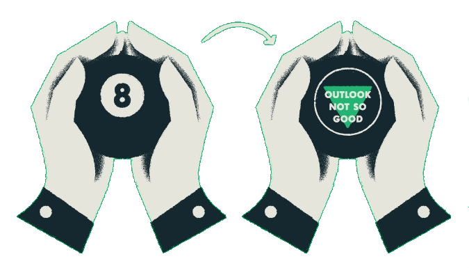

Random Dating vs. Dating Deliberately
“I’ve been dating since I was 15.I’m exhausted. Where is he?”
I don’t know what you were streaming after your divorce, but I binge-watched HBO’s Sex and the City. The show’s iconic main characters - Carrie Bradshaw, Samantha Jones, Charlotte York, and Miranda Hobbes - were exactly who I needed to keep me company as I tried to wrap my head around being single after twenty-five years of marriage.
All four single ladies were successful, good-looking, full of life, and independent; and yet, in spite of everything they had going for them, they still struggled to find love. It was so relatable! Charlotte, the show’s resident idealist and romantic, said it best:
“I’ve been dating since I was 15. I’m exhausted. Where is he?”
I found myself asking similar questions when I began dating after divorce. Like my “friends” on Sex and the City, my experiences in the dating pool, especially at first, were comedic...and far from encouraging! I think we’ve all been there: the creeper who looks at you like a door prize; the guy who inexplicably “ghosts” you after a few dates, then lazily attempts to reconnect weeks or months later; the “slow fader” who can’t just come out and say he’s not interested; the “recently separated” guy who is, in fact, still very much married. I didn’t think dating in mid-life would be easy, but did it really have to be this hard? It seemed like my search for love was nothing but an endless stream of obstacles and disappointments.
" I didn’t think dating in mid-life would be easy, but did it really have to be this hard? It seemed like my search for love was nothing but an endless stream of obstacles and disappointments."
What is Random Dating?
Eventually, I realized the problem was that, as a teenager, I'd been trained to date randomly. I’d unconsciously acquired the belief dating was essentially a numbers game with few real rules, apart from “look good” and “attract as many men as possible.” I'd implicitly assumed dating was more about being lucky than being smart: all you could do was put yourself out there and hope for the best. Vague criteria (like "chemistry") was all I had to zero in on potential mates, and, even if relationship after relationship lead to dead-ends and heartbreak, the solution was to just keep dating until I found “the One”.
None of this made any sense! An entire generation of women were raised to date with no definite plan, purpose, or destination. No wonder so many of our first marriages ended in heartbreak! And no wonder so many of us were finding it hard to start dating again after divorce.
What is Deliberate Dating?
If random dating was the problem, what was the solution? The answer seemed obvious: deliberate dating. I needed to identify what specific traits I was looking for in a partner, and I needed to link every stage of the dating process to "screening" for those traits.
This was a huge breakthrough, but it also raised some big questions like:
- What specific traits was I looking for in a man?
- How could I know, with some degree of certainty, that a man actually had those traits?
I'd learned the hard way that many older men in the dating pool weren't always honest; and, more to the point, asking men to fill out a questionnaire or grilling them on a first date was a surefire way to send them running!
I started looking for answers to my questions. I read book after book on relationships, dating, and romance; I reached out to fellow Coaches with my questions and asked them for feedback and recommendations; I talked to other single divorcees. I learned to distinguish the work of real relationship experts from the work of grifters and New Age gurus who offered single women plenty in the way of general, one-size-fits-all advice but very little in the way of practical techniques, personalized feedback, or real results. I gave myself permission to worry less about finding someone and worry more about finding myself. I took up golfing. I reconnected with my love of dancing. I kept growing as a person.
My downtime and hard work eventually lead me to another huge breakthrough:
I discovered that compatibility, not chemistry or physical attraction, was the crucial factor driving long-term relationship success!
I came to understand the traits I was looking for in a man were inseparably linked to my own unique character traits, and that if I wanted to recognize my ideal partner when I saw him, I’d have to partner with myself first. I realized I could use the small talk and game playing surrounding online dating to my advantage by asking men simple, open-ended questions about themselves and their lives to discreetly assess their compatibility. (I also realized that, by making these connecting questions fun, light, and flirty, I could easily avoid making every conversation or date feel like a joyless test or high stakes job interview!) I belatedly grasped the fact that relationships are built, not discovered, and that the skills I needed to date deliberately were the same skills I needed to find and keep true love.
Armed with this newfound understanding, I re-entered the online dating scene. Applying my insights into deliberate dating and compatibility gave me a sense of control, purpose, and perspective I'd never experienced before as a single. Dating was no longer the anxiety-producing chore it once was. Red flags were easier to spot. I didn't have to wait until a face-to-face meeting to get a general idea of whether or not a man was a good match. I came to genuinely enjoy connecting with men on and offline, even when the guys I met weren't a good fit romantically. (It turns out there are actually a lot of good guys out there; if you know how to spot them!) Dating stopped feeling like a gauntlet I had to run as quickly as possible. After years of discouragement, I was finally able to slow down and really appreciate my search for a compatible connection.
Conclusion:
If You Don’t Know What You’re Looking For, You’ll Never Find It!”
So many things separate random daters from deliberate daters, but perhaps the biggest single difference is deliberate daters understand the importance of compatibility.
Compatibility is like the glue that holds a relationship together. Compatible partners share similar lifestyle choices, interests, core beliefs, and, most importantly, core values. They use compatibility to build a strong foundation for their relationship, a foundation that leads to a deepening sense of intimacy over time. This foundation also nurtures a deeper sense of security and togetherness than most random daters ever experience, even in their most “successful” relationships. Why? Because compatibility starts with a conscious understanding of what makes a relationship work and builds on it. It doesn’t resist change; in fact, it allows for and encourages personal growth in both partners. It relishes the passing of time. It sidesteps the problems associated with “settling” and minimizes the likelihood of nasty, late-in-the-game surprises or dealbreakers.
Does compatibility mean different things for different people? Of course! But all deliberate daters know what compatibility means for them. And that means they know what they’re looking for in a partner long before they hop on the Internet or sit down for a first date.
As cliche as it sounds, if you don’t know what you’re looking for, you’re never going to find it! Whether you’re recently divorced and still working up the confidence to “get back out there” or you’re a fabulous single actively searching for love, do yourself a favor and learn to date deliberately. I promise you: it’s the best way to create the life you desire and find the love you deserve!
Wishing You All The Best in Life & Love,

Bernadette Smith, MCC
Bernadette Smith, MCC, is a certified dating & relationship expert with over a decade’s worth of experience. She is the founder of Compatible Connections, a boutique coaching firm that specializes in helping divorced women become confident, conscious daters.
Upcoming Events
All of our upcoming events are currently on hold due to the COVID-19 pandemic.
Follow Us On Facebook!
We post Inspirational Graphics every Monday and Dating Tips every Friday.
Subscribe to The Meet-Cute!

The Meet-Cute is Compatible Connections’ way of saying “thank you” to all the fabulous singles who make our work possible.
Whenever we can, we share a heartfelt e-mail with our subscribers, chocked full of fun, light, flirty, and informative content.
You can read our current issue here, peruse back issues here and subscribe here.
All new subscribers receive two free gifts - 8 Things Online Dating Sites Don't Want You To Know and a Partner With Yourself First Personal Inventory - when they sign up to receive new issues.
Let's Connect!
If you have any questions about this post, we’d love to hear from you!
Click here to e-mail Coach Bernadette at bernadette at compatibleconnections dot biz.